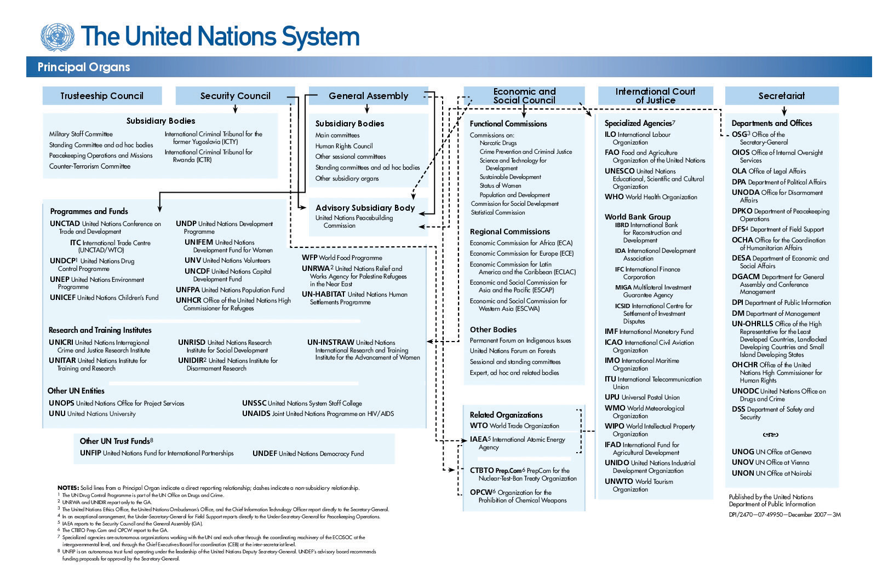

The final section in this chapter reviews an institution, the United Nations, whose primary purpose is to promote peace between countries. Peace fosters stability and that stability provides the framework for the expansion of business interests and trade.
The opening case study demonstrated how political, economic, and military instability in Europe led to two world wars and eventually the development of the EU. It’s clear that conflict between countries significantly reduces international trade and seriously damages national and global economic welfare.
It’s worth noting that there is a wide range of businesses that benefit from war—for example, companies in industries that manufacture arms, plastics, clothing (uniforms), and a wide range of supplies and logistics. Companies such as BAE Systems, Lockheed Martin, Finmeccanica, Thales Group, General Dynamics, KBR (Halliburton), Rolls-Royce, Boeing, and Honeywell are just some of the world’s largest companies in this sector, and all receive benefits that are woven into economic and trade policy from their respective governments directly as well as through general preferences in trade policies and agreements.
Industrialized countries negotiate free trade and investment agreements with other countries, but exempt military spending from the liberalizing demands of the agreement. Since only the wealthy countries can afford to devote billions on military spending, they will always be able to give their corporations hidden subsidies through defence contracts, and maintain a technologically advanced industrial capacity.
And so, in every international trade and investment agreement one will find a clause which exempts government programs and policies deemed vital for national security.Stephen Staples, “Confronting the Military-Corporate Complex” (presented at the Hague Appeal for Peace, The Hague, May 12, 1999).
Nevertheless, military conflict can be extremely disruptive to economic activity and impede long-term economic performance. As a result, most global businesses find that operating in stable environments leads to the best business operations for a range of reasons:
While bilateral or multilateral trade doesn’t always dissuade countries from pursuing military options, countries that are engaged in trade discussions are more likely to use these forums to discuss other conflict areas. Furthermore, the largest global companies—Siemens, General Electric, Boeing, Airbus, and others—have the economic might to influence governments to promote initiatives to benefit their companies or industries.
Business in Conflict Zones: Angola and Conflict Diamonds
Angola, located in southern Africa, is a country that faced internal devastation from an intense civil war raging from its independence in 1975 until 2002. For many businesspeople, Angola may seem a relatively obscure country. However, it is the second-largest petroleum and diamond producer in sub-Saharan Africa. While the oil has brought economic success, the diamonds, known as conflict or blood diamonds, have garnered global attention. Even Hollywood has called attention to this illicit trade in a 2006 movie entitled Blood Diamond as well as numerous other movie plots focusing on conflict diamonds, including one in the James Bond franchise.
So what are conflict diamonds? The United Nations (UN) defines them as follows:
Conflict diamonds are diamonds that originate from areas controlled by forces or factions opposed to legitimate and internationally recognized governments, and are used to fund military action in opposition to those governments, or in contravention of the decisions of the Security Council….
Rough diamond caches have often been used by rebel forces to finance arms purchases and other illegal activities. Neighbouring and other countries can be used as trading and transit grounds for illicit diamonds. Once diamonds are brought to market, their origin is difficult to trace and once polished, they can no longer be identified.United Nations Department of Public Information in cooperation with the Sanctions Branch, Security Council Affairs Division, Department of Political Affairs, “Conflict Diamonds: Sanctions and War,” United Nations, March 21, 2001, accessed December 31, 2010, http://www.un.org/peace/africa/Diamond.html.
First discovered in 1912, diamonds are a key industry for Angola. During its twenty-seven years of conflict, which cost up to 1.5 million lives, rebel groups in Angola traded diamonds to fund armed conflict, hence the term conflict diamonds. Some estimate that Angola’s main rebel group, National Union for the Total Independence of Angola (UNITA), sold more than $3.72 billion in conflict diamonds to finance its war against the government.Wikipedia, s.v. “Blood diamond,” last modified February 9, 2011, accessed February 15, 2011, http://en.wikipedia.org/wiki/Blood_diamond.
These morally tainted conflict diamonds, along with those from other conflict countries, were bad for the global diamond industry—damaging the reputation and integrity of their key commodity product.
In 1999, the UN applied sanctions to ban the Angolan rebels’ trade in conflict diamonds, but a portion of diamonds continued to be traded by the rebels. The UN conducted extensive investigations. “The Security Council’s diamond campaign is part of an ongoing UN effort to make sanctions more selective, better targeted and more rigorously enforced instruments for maintaining international peace and security.”Michael Fleshman, “Targeting ‘Conflict Diamonds’ in Africa,” Africa Recovery 14, no. 4 (January 2001): 6, accessed December 31, 2010, http://www.un.org/ecosocdev/geninfo/afrec/subjindx/144diam.htm.
Eventually, the UN, various governments, the diamond industry, and nongovernmental organizations, including Global Witness, Amnesty International, and Partnership Africa Canada (PAC), recognized the need for a global system to prevent conflict diamonds from entering the legitimate diamond supply chain and thus helping fund conflicts. The process that was established in 2003 provides for certification process to assure consumers that by purchasing certified diamonds they weren’t financing war and human rights abuses. As a result, seventy-four governments have adopted the Kimberley Process certification system, and more than 99 percent of the world’s diamonds are from conflict- free sources.World Diamond Council, “Eliminating Conflict Diamonds,” accessed December 31, 2010, http://diamondfacts.org/conflict/eliminating_conflict_diamonds.html#kim.
The Kimberley Process and global attention have addressed a critical global-business ethics issue. By taking collective ethical action, the global diamond industry, including firms such as De Beers, Cartier, and Zale, have not only done the right thing but have also helped preserve and grow their businesses while restoring the reputation of their industry.
For example, South African De Beers is the world’s largest diamond mining and trading company. Prior to UN action and the Kimberley Process, De Beers was buying conflict diamonds from guerilla movements in three African countries, thereby financing regional conflicts. One UN investigation in Angola found that rebel forces bartered uncut diamonds for weaponry, thereby allowing the civil war to continue in 1998 despite international economic and diplomatic sanctions. In 1999, under UN pressure, De Beers decided to stop buying any outside diamonds in order to guarantee the conflict-free status of its diamond.Dick Durham, “De Beers Sees Threat of Blood Diamonds,” January 18, 2001, accessed April 30, 2011, http://www.cnnstudentnews.cnn.com/2001/WORLD/africa/01/18/diamonds.debeers/index.html.
Today, De Beers states that 100 percent of the diamonds it sells are conflict-free and that all De Beers diamonds are purchased in compliance with national law, the Kimberley Process, and its own Best Practice Principles.De Beers Group, “FAQs: What Has De Beers Done about Conflict Diamonds?,” 2008, accessed December 31, 2010, http://www.debeersgroup.com/en/Global/FAQs/#Section755.
Angola is still dealing with the loss and devastation of an almost thirty-year conflict with its quality of life among the worst in the world in terms of life expectancy and infant mortality. Nevertheless, the country has made rapid economic strides since 2002 and is now one of the fastest-growing economies in Africa. Conflict diamonds are no longer traded in Angola. The country is a Kimberley Process participant and currently produces approximately 9 percent of the world’s diamonds.Wikipedia, s.v. “Angola,” last modified February 13, 2011, accessed February 16, 2011, http://en.wikipedia.org/wiki/Angola.
The United Nations (UN) was formed in 1945 at the end of World War II to replace the League of Nations, which had been formed in 1919. Its original goals remain the same today: to maintain international peace and security; to develop friendly relations between nations; and to foster international cooperation in solving economic, social, humanitarian, and cultural issues. There is an underlying premise of human rights and equality. Almost all of the world’s countries are members—currently 192 nations—with only a few smaller territories and Taiwan, out of deference to China, given observer status and not membership. The UN is funded by member countries’ assessments and contributions.
The work of the UN reaches every corner of the globe. Throughout the world, the UN and its agencies assist refugees, set up programs to clear landmines, help expand food production, and lead the fight against AIDS. They also help protect the environment, fight diseases, reduce poverty, and strive for better living standards and human rights. Although the UN is often best known for peacekeeping, peace building, conflict prevention, and humanitarian assistance, the organization also works on a broad range of fundamental social, economic, environment, and health issues. In the Ethics in Action sidebar on Angola, you learned how the UN led the way to resolving the problem of conflict diamonds and partnered with the global diamond industry to develop a long-term solution to a thorny ethical trading problem and promote peace and stability in former conflict countries like Angola.
A secretary-general leads the UN and serves for a five-year term. Structurally, the UN consists of six main bodies:
Figure 5.4 The United Nations System
Source: The United Nations
A strong UN is the world’s most effective voice for international cooperation on behalf of peace, development, human rights, and the environment. The UN has also sought to forge partnerships outside of the traditional diplomatic arena. One such partnership that is of growing interest to private sector businesses is the UN Global Compact. This is a strategic policy initiative for businesses that are committed to aligning their operations and strategies with ten universally accepted principles. Why would companies want to align their businesses with these principles? For starters, some businesses see it as a way to be a good global corporate citizen, a label that they can use to attract and retain the best workforce as well as use in marketing efforts to exhibit their global corporate responsibility. The UN is motivated to engage the private sector in helping solve the world’s most pressing problems, often with for-profit solutions.
The United Nations Global Compact presents a unique strategic platform for participants to advance their commitments to sustainability and corporate citizenship. Structured as a public-private initiative, the Global Compact offers a policy framework for the development, implementation, and disclosure of sustainability principles and practices related to its four core areas: human rights, labour, the environment and anti-corruption. Indeed, managing the enterprise risks and opportunities related to these areas is today a widely understood aspect of long-term “value creation”—value creation that can simultaneously benefit the private sector and societies at large.
With over 7700 business participants and other stakeholders from more than 130 countries, the Global Compact offers participants a wide spectrum of specialized work streams, management tools and resources, and topical programs and projects—all designed to help advance sustainable business models and markets in order to contribute to the initiative’s overarching objective of helping to build a more sustainable and inclusive global economy.“How to Participate,” United Nations Global Compact, accessed January 1, 2011, http://www.unglobalcompact.org/HowToParticipate/Business_Participation/index.html.
Companies use their participation in the UN Global Compact to illustrate that they are good global corporate citizens, in an effort to satisfy the objectives of consumers, suppliers, and investors as well as government and nongovernment entities—all of whose support a global company needs to achieve its global business objectives.
One example is Coca-Cola and its adherence to maintaining its good global business citizenship also earns it the ability to influence trade and economic policy with governments and organizations that can positively impact its business interests in select markets around the world. For example, Coca-Cola highlights its commitment on its website and in global reports. The company explains on its website, “In March 2006, The Coca-Cola Company became a signatory to the United Nations (UN) Global Compact, affirming our commitment to the advancement of its 10 universal accepted principles…in the areas of human rights, labor, the environment and anti-corruption. Several of our bottling partners are also signatories.”“UN Global Compact,” Coca-Cola Company, accessed January 1, 2011, http://www.thecoca-colacompany.com/citizenship/un_global_compact.html.
Human Rights
Labour
Environment
Anti-Corruption
The UN has a very clear diplomatic role on the global stage. It’s also important to remember that it works closely with the private sector, which actually carries out the vast amount of services and projects around the world. Global businesses sell to the UN just as they do to their own governments and public-sector organizations. Each arm of the UN has a procurement office. The UN Procurement Division does business with vendors from all over the world and is actively working to increase its sources of supply from developing countries and countries with economies in transition.
(AACSB: Reflective Thinking, Analytical Skills)